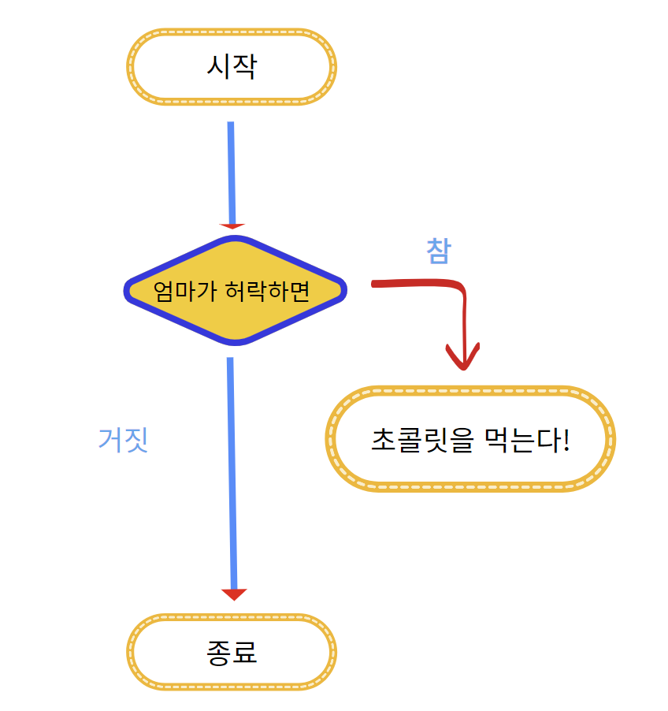
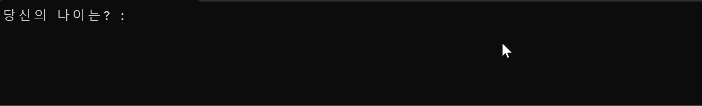

제어문이란?
제어문은 프로그램의 실행 흐름을 원하는 방향으로 바꾸는 명령문이다. 코드가 위에서 아래로만 실행되는 것이 아니라, 조건에 따라 다른 길로 이동하거나 같은 일을 반복하게 만든다.
조건문
조건에 따라 서로 다른 명령을 실행한다.if, switch
반복문
조건이 유지되는 동안 코드를 반복한다.for, while
기타 제어문
반복을 멈추거나 다음 흐름으로 건너뛴다.break, continue
if문을 집중해서 살펴본다.확인
조건이 맞으면 블록 안으로 이동
조건이 아니면 실행하지 않고 통과
if문은 “조건이 참일 때만” 실행한다
if문은 괄호 안의 조건식을 먼저 확인한다. 조건식의 결과가 참이면 중괄호 안의 코드를 실행하고, 거짓이면 블록을 건너뛴다.
if (조건식)
{
조건식이 참일 때 실행할 문장;
}대입이 아니라 “두 값이 같은가?”를 묻는다.
두 조건이 모두 참일 때 전체가 참이 된다.
둘 중 하나라도 참이면 전체가 참이 된다.
0이 거짓이고, 0이 아닌 값은 참으로 취급된다. 그래서 if (1)은 항상 실행되고, if (0)은 실행되지 않는다.초콜릿을 먹어도 될까?
엄마가 허락했을 때만 초콜릿을 먹는 상황을 if문으로 표현해보자. mom_says_ok에 저장된 값이 1인지 확인하고, 맞을 때만 실행문을 통과시킨다.
#include <stdio.h>
int main(void)
{
int mom_says_ok = 1; // 1: 허락, 0: 거절
if (mom_says_ok == 1)
{
printf("허락했으니, 초콜릿을 먹는다!\n");
}
return 0;
}| 코드 | 뜻 |
|---|---|
int mom_says_ok = 1; | 허락 상태를 변수에 저장한다. 1은 허락, 0은 거절이다. |
mom_says_ok == 1 | 현재 상태가 허락인지 비교한다. |
{ ... } | 비교 결과가 참일 때 실행할 블록이다. |
🍫 PERMISSION / IF LAB
조건값을 바꿔 분기 확인허락했으니, 초콜릿을 먹는다!
if 블록 안의 실행문이 작동합니다.

허락하지 않았을 때는 else
if 조건이 거짓일 때도 다른 행동을 실행하고 싶다면 else 블록을 붙인다. if와 else 중 둘 중 하나만 실행된다는 것이 핵심이다.
#include <stdio.h>
int main(void)
{
int mom_says_ok = 0;
if (mom_says_ok == 1)
{
printf("허락했으니, 초콜릿을 먹는다!\n");
}
else
{
printf("허락하지 않았으니, 초콜릿을 먹지 않는다!\n");
}
return 0;
}조건이 참이면
if 블록을 실행하고 else는 건너뛴다.
조건이 거짓이면
if 블록은 건너뛰고 else 블록을 실행한다.
조건이 여러 단계라면 else if
조건을 한 번만 확인하는 것이 아니라, 여러 기준으로 나눠야 할 때는 else if를 이어 붙인다. 위에서부터 차례대로 검사하며, 처음으로 참이 된 블록 하나만 실행한다.
#include <stdio.h>
int main(void)
{
int age;
printf("당신의 나이는? : ");
scanf("%d", &age);
if (age < 10)
{
printf("당신은 어린이입니다. 초콜릿을 먹을 수 없어요!\n");
}
else if (age < 20)
{
printf("당신은 청소년입니다. 초콜릿을 먹을 수 있어요!\n");
}
else
{
printf("당신은 성인입니다. 초콜릿을 더 많이 먹을 수 있어요!\n");
}
return 0;
}🎂 AGE CHECK / IF CHAIN
위에서부터 조건을 순서대로 검사합니다age < 10 → 첫 번째 if 조건이 참이므로 이 블록을 실행합니다.

조건식의 결과는 참 또는 거짓
비교 연산자는 조건식의 결과로 참과 거짓을 만든다. 아래처럼 조건식이 어떤 값을 내놓는지 확인하면 if문을 읽기가 쉬워진다.
| 조건식 | 결과 | if 블록 |
|---|---|---|
5 > 3 | true | 실행 |
5 == 3 | false | 건너뜀 |
age < 10 && age > 0 | age에 따라 결정 | 두 조건이 모두 참일 때 실행 |
=와 ==는 다르다 ✏️ =는 값을 저장하는 대입 연산자이고, ==는 두 값이 같은지 비교하는 연산자다. 조건식에서는 비교 의도를 분명히 하기 위해 ==를 사용한다.if문과 switch문은 언제 나눠 쓸까?
두 조건문 모두 실행 흐름을 나누지만, 잘 어울리는 문제의 모양이 다르다.
🔀 if문이 잘하는 것
“20살 이상”, “점수가 90점보다 높고 아이템이 있다”처럼 범위·복합 조건·논리식을 표현한다.
if (age >= 20)
{
printf("성인");
}🎛️ switch문이 잘하는 것
“메뉴 번호가 1인지 2인지”처럼 하나의 값이 특정 선택지와 정확히 일치하는 상황을 표현한다.
switch (menu)
{
case 1: ...
}if문 핵심만 다시 체크하기
🚦 스테이지 클리어 조건
- 제어문은 프로그램의 실행 흐름을 조건·반복·분기 방식으로 바꾼다.
if는 조건이 참일 때만 블록 안의 코드를 실행한다.else는 if 조건이 거짓일 때의 기본 행동을 담당한다.else if는 여러 조건을 위에서부터 순서대로 검사한다.- 범위나 복합 조건은 if문, 정확한 선택지 분기는 switch문이 읽기 좋다.